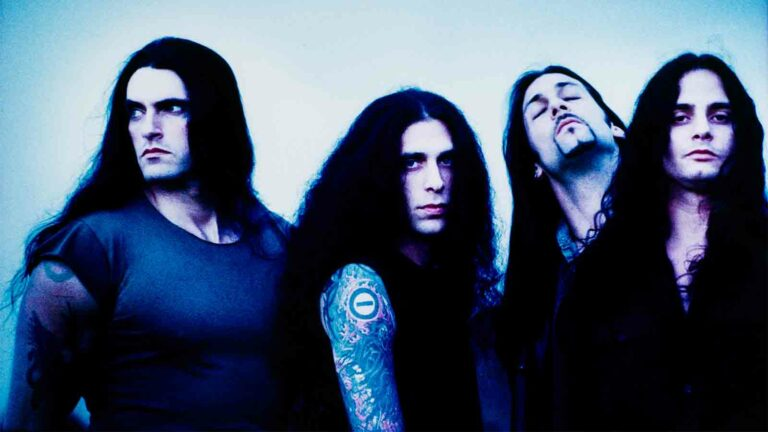
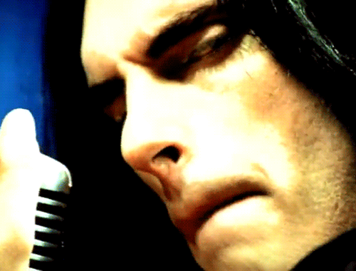

Type O Negative
Type O Negative ended in 2010 with the death of bassist and vocalist Peter Steele. Since then, the band's
members have gone on to play in other successful projects
(except for keyboardist Josh Silver who became an EMT), and that
was that for Type O Negative.
Band
Music

Peter Steele
Peter Thomas Ratajczyk (January 4, 1962 – April 14, 2010),
known professionally as Peter Steele, was an American musician. He was best known as the lead vocalist, bassist
and
composer of the gothic metal band Type O Negative.Before forming Type O Negative, Steele had created the heavy
metal group Fallout and the thrash metal band Carnivore.
Biography
Photos